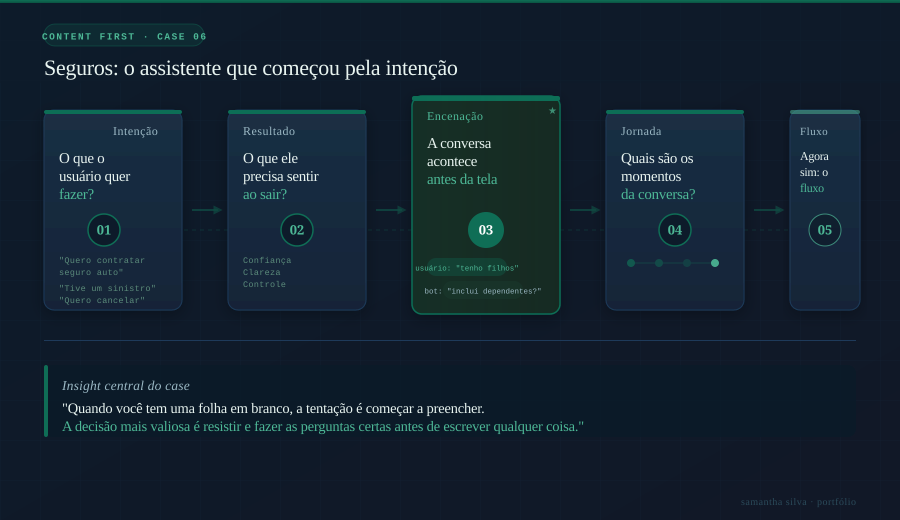
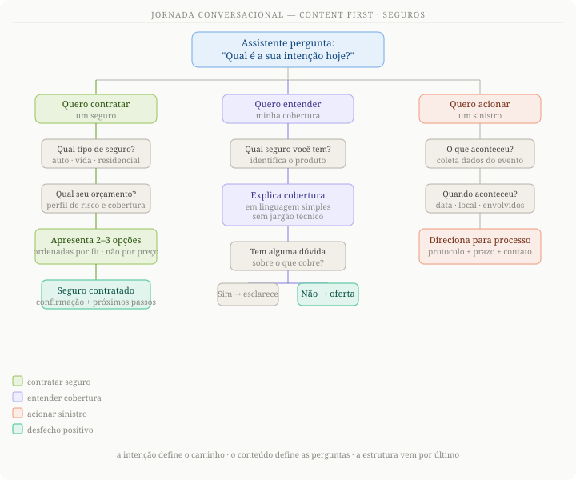

O processo Content First
A instituição estava lançando seu primeiro assistente virtual de seguros. Sem histórico, sem fluxos herdados, sem legado para respeitar. Uma folha em branco e uma oportunidade para fazer do jeito certo desde o começo.
O objetivo era entregar um atendimento completo: da contratação até a ativação do sinistro. E ser melhor que os concorrentes já no lançamento.
A decisão mais importante que tomamos foi não começar pelo fluxo. Começamos pela intenção do usuário e pelo resultado que queríamos entregar. O fluxo veio depois, como consequência.
Uma boa jornada de seguros precisa satisfazer dois objetivos ao mesmo tempo: o que o segurado precisa e o que a seguradora precisa saber para oferecer o produto certo.
Quando os dois lados estão claros, a conversa se projeta quase sozinha. Você sabe o que perguntar, em que ordem e por quê.

A intenção define o caminho
Antes de escrever o fluxo formal, encenamos a conversa como se fosse real. Essa etapa revelou lacunas que o fluxo formal não teria mostrado: perguntas que o segurado faz fora de ordem, informações que ele assume que o assistente já sabe.
Com a encenação validada, transformamos os passos em uma jornada estruturada. Sempre partindo da intenção do usuário e garantindo que cada etapa tinha uma razão clara de existir.
Cada etapa da jornada foi construída a partir da encenação, não o contrário. O conteúdo ditou a estrutura, não a estrutura ditou o conteúdo.
Quando você tem uma folha em branco, a tentação é começar a preencher. A decisão mais difícil e mais valiosa é resistir a essa tentação e fazer as perguntas certas antes de escrever qualquer coisa.
Samantha Barreto